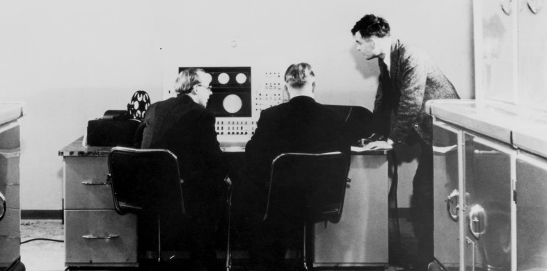

Alan Mathison Turing
The man who shortened the war by two years and saved about 14 million lives.

Alan Turing working with his fellow mates.
A timeline of Alan Turing's life.
- - Alan Mathison Turing born in Maida Vale, London, to Ethel Sara Turing (nee Stoney) and Julius Mathison Turing.
- - Alan becomes deeply interested in the work of Albert Einstein and is able to develop work done by Einstein based on a questioning of Newton's Laws of Motion.
- - September - Alan is asked to join the Government Codes and Ciphers School and arrives at Bletchley Park the day after war is declared.
- - With Gordon Welchman, Alan develops the Bombe, a device for decrypting the messages sent by the Germans using their Enigma machine.
- - During 1942, Alan and his colleagues also manage to break the more complicated German Naval Enigma system. This is a tremendous help to the Allies in the Battle of the Atlantic.
- -Alan is asked to work as a top level intelligence link with USA, which he visits to share information on cryptology (code-breaking).
- - Alan publishes'Computing Machinery and Intelligence' in which he develops the Turing Test, an attempt to define a standard for a machine to be called intelligent. The paper will become very famous.
- - Alan is arrested for gross indecency and loses his security clearance. He is offered chemical treatment as an alternative to imprisonment. The hormone treatment has a very detrimental effect on him.
- - Alan's body is found in his home in Wilmslow, Cheshire. The post-mortem finds that his death had been caused by poisoning. A half-eaten apple is found next to him laced with cyanide. His body is cremated at Woking crematorium.
"A computer would deserve to be called intelligent if it could deceive a human into believing that it was human."
--Alan Turing